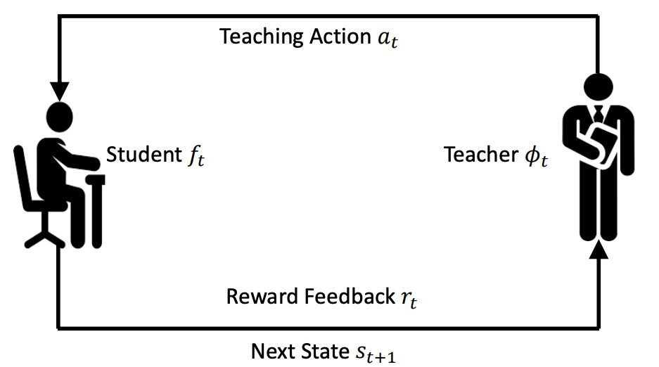
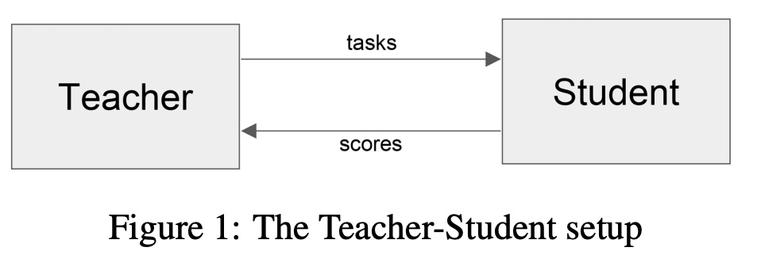

Learning to Teach
这篇博客写一写Learning to Teach(L2T), L2T这个概念是MSRA 在2018年ICLR上提出来的。L2T 包含两个模型:
- Student Model(传统机器学习模型)
- Teacher Model
直接上模型图 
Learning to Teach 的特殊之处
不同于传统机器学习, L2T 有一个 Teacher Model 来为Student Model 提供输入, 包括3种类型:
- Training data
训练数据集 D: 可以类比于人类教师选择部分书籍作为教科书,从而保证学生能够学得轻松 - Loss Function
损失函数 L: 可以类比成人类教师会出一个测验试题,来考察学生的学习进度 - Hypothesis Space
假设空间 $\Omega$: 可以类比成对于一个特定的问题，小学生可能只会用加减乘除，中学生可能用函数方程，大学生可能会使用线性代数
根据模型图，可以将L2T中teacher model优化过程看为一个 决策过程(sequential decision process)，
- State: 目前teacher model 所能接触到的可用信息,在$t$时刻可以表示为$s_t$；通常情况 t 时刻的state 是通过 t-1时刻的student model, 也即$f_{t-1}$ 和teacher model 自身之前的历史状态
- Action: 根据特定任务,可能是 $[D, L, \Omega]$的组合,在$t$时刻可以表示为$a_t$
- Policy: $\phi_\theta: S \to A$, $\phi_{\theta}$ 可以看成是teacher model
而对于student model 来讲，在$t$时刻, student model 会以$a_t$作为输入，其输出为$f_{w_t}$。 $f_{w_t}$可以看成传统的机器学习模型
可以看到，对于student model， 可以采用传统的机器学习优化方案。而对于teacher model, 我们可以采用reinforcement learning 来优化。
teacher model 可以看成是 $Policy$, 而environment 可以看成是 $State$。而reward的定义是通过student model 的feedback 提供的。
L2T 特例情况：Data Teaching & Neural Netowork
所谓的Data Teaching 其实很容易理解，就是本来teacher model 的Action 是$[D, L, \Omega]$的组合，但是现在我们固定$L, \Omega$, 因此teacher model 只涉及到 training data $D$ 的选择. 此时,
State Action Reward 定义
State, Action, Reward 重新定义如下
- State: $s_t = (D_t, f_t)$; 也即是目前的training dataset 和 目前的student model
- Action: $a = _{m=1}^{M}$, where M is the batch size, 代表是否将本次batch 的数据的某个数据留在 $D_t$ 中
- Reward: 我们当然期待student model 训练学习的越快越好，假定 $i_r$ 代表在第$i_r$个batch 首次达到了某个Accuracy. Reward 可以定义为 $-i_r$
利用Reinforcement Learning 进行优化
Teacher-Student Curriculum Learning
这个可以划归到 Carriculum Learning 范畴，鉴于其与Learning to Teach 的高度相识性，这里简单介绍一下:
